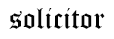

БиблиотекаКЊИГЕ НАШЕГ ДЕТИЊСТВА
ХЕНРИК СЈЕНКЈЕВИЧКРОЗ ПУСТИЊУИ ПРАШУМУ
Наслов оригиналаHenryk SienkiewiczW PUSTYNI I W PUSZCZY(1911)
ПревеоЋОРЂЕ ЖИВАНОВИЋ
Скен и обрада:www.BalkanDownload.or
ПЧЕЛИЦАЧачак, 2009.